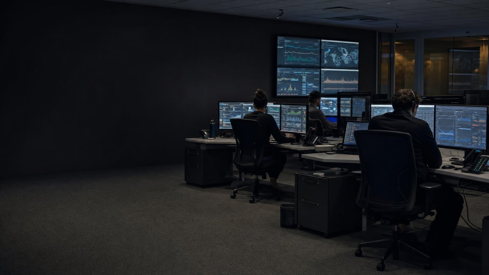
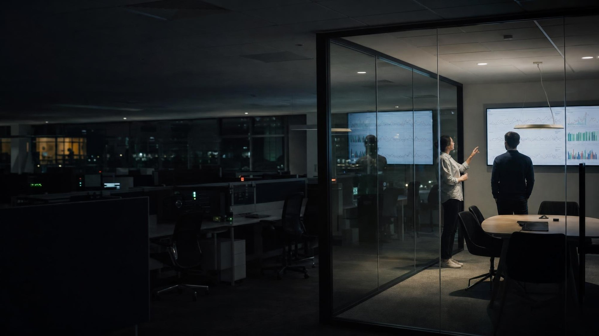
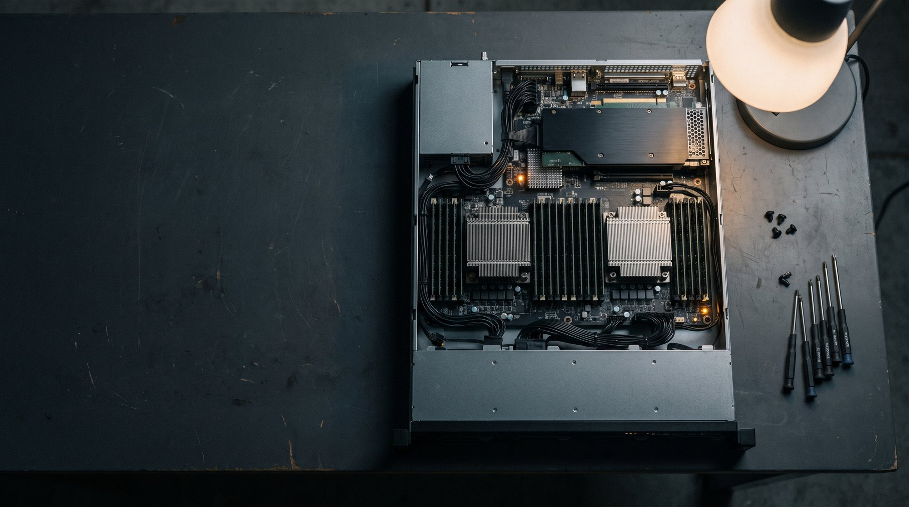
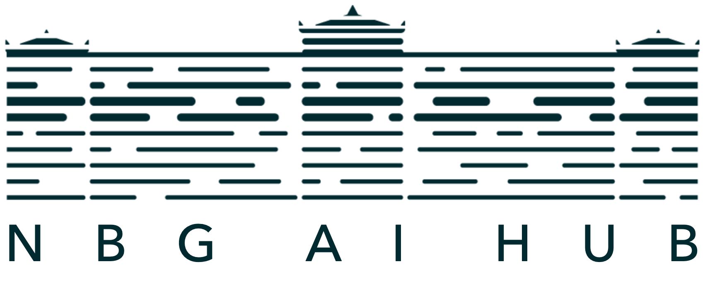

The register of a good terminal, or of a financial broadsheet at night. Thin-line charts, small
multiples, monospaced figures. Reach for this theme when the argument is carried by measurement —
adoption curves, unit economics, before-and-after.
The discipline is what keeps it one degree away from the stock “AI deck”: no glows, no
gradient washes, no network or node graphics, no brain motifs. Charts only, and one accent per slide.
02 / Colour
Two grounds, three accents, and nothing else.
A slide sits on one of two grounds: night for covers, dividers and data pages, or
paper for the pages that carry argument. Everything else is a hairline, a label or a
single accent.
Grounds and structure
Night#0E1726
NightDark ground
Grid#24334A
GridRules on night
Slate#3C4E6B
SlateSecond plot line
Steel#7D8CA3
SteelLabels on night
Accents — one per slide
Lagoon#2F7D6E
LagoonPrimary accent
Amber#E0A32E
AmberHighlight series
Rust#C4441C
RustAlert / negative
Paper side
Paper#F2F1EE
PaperLight ground
Ink#1A1A18
InkText on paper
Ink 2#4B4943
Ink 2Secondary text
Light#E9EEF5
LightText on night
Usage rules
One accent per slide
Pick lagoon, amber or rust and hold it for the whole slide — the eyebrow, the one line of the title
that carries weight, and the series being argued about. A second accent on the same slide reads as
decoration and the theme loses its authority.
Rust means something
Rust is reserved for the series or the figure the audience is meant to be uneasy about. Using it
for ordinary emphasis spends the only alarm the palette has.
Never a gradient
Grounds are flat. Where a panel has to meet the ground, meet it with a hairline in
grid, not with a fade. The one exception is the scrim over a photograph, which exists to
pull it into the palette, not to soften an edge.
03 / Type
IBM Plex Sans for text, IBM Plex Mono for every figure.
Two faces, both bundled with the theme, both carrying Greek. Titles are set light and large with
negative tracking; a single word may step up to weight 500 to carry the emphasis. Every eyebrow, label,
unit and number is monospaced — that is what makes the deck read as measured rather than designed.
Cover title116–132pt · Plex Sans 300 · −0.022em
From Automation to Judgement
Divider title92–104pt · Plex Sans 300
Where adoption actually happens
Content title68pt · Plex Sans 300 · −0.02em
Adoption runs back to front
Body28–32pt · Plex Sans 400 · 1.5 line height
Four decades of banking technology — and what actually changes with AI.
Data numeral26–36pt · Plex Mono 500 · tabular · no tracking
1 284 · 37.5% · €12.4m
Micro-label17–18pt · Plex Mono 400 · 0.12em
SOURCE: [YOUR SOURCE] · [PERIOD]
The two kinds of numeral
Display numerals — 48pt and up
The one big figure on a slide, and the chapter numbers on dividers. Plex Mono 300,
tracking −0.04em, in the slide's accent. Nothing else shares the line.
Data numerals — 36pt and below
Currency, table values, comparison figures, axis labels. Plex Mono 500,
font-variant-numeric: tabular-nums, no negative tracking, and never below
26pt on the artboard: a 1920-wide slide shown at 1366×768 is scaled to 71%, and a
Light figure at 26pt was found illegible in pilot use. Never set a data figure in weight 300.
Greek characterset
Both bundled faces are subset to latin, latin-ext and Greek, so Greek and bilingual decks set
natively in the theme's own type — titles and figures alike. This is the one place Instrument is less
constrained than the AIHub theme, whose Oswald titles have no Greek.
Από την αυτοματοποίηση στην κρίση
ΥΙΟΘΕΤΗΣΗ ΑΝΑ ΛΕΙΤΟΥΡΓΙΑ
04 / Motif
The hairline plot is the only ornament.
Where the AIHub theme reaches for its circuit lines, Instrument reaches for a chart. A thin-stroke
polyline, a grid of small multiples, an index rule across the top of a cover — these are the theme's
graphics, and they are the same object the argument is about. Photography is the theme's second
register, never its first: it sets the scene, the plot carries the claim.
How a plot is drawn
Stroke 1.25–2px at artboard scale, vector-effect: non-scaling-stroke so it survives the 0.375 preview scale and the PDF export.
No fills. No area gradient under a line, no drop shadow, no marker dots except on the single value being called out.
Grid in grid #24334A at 0.25px, four to six rows. On paper the grid is rule #D9D6CE.
Accent for the series being argued about, slate and steel for the comparators. Rust only when the point is that a line went the wrong way.
A source line underneath, always. A figure without a SOURCE: micro-label is off-theme.
What the theme never draws
No glow — no box-shadow spreads, no blurred accents behind text, no bloom on a line.
No gradient wash — grounds are flat; panels meet with a hairline.
No nodes — no network graphs, constellations, connected dots or mesh backgrounds.
No brains — and no robots, circuits, chips or abstract “intelligence” iconography.
05 / Photography
Present-day rooms, pulled into the palette.
Twenty-four photographs — eight subjects of real technical environments and workspaces, three takes
each. The brief is deliberately anti-futuristic: only equipment that ships today, available light,
no holograms, no neon, no glowing circuit overlays, no robots. Cutting edge as it actually looks.

ops-floorlandscape ×3
terminal-deskportrait ×3
rack-aisleportrait ×3
fibre-patchlandscape ×3

war-roomlandscape ×3
glass-boardportrait ×3

compute-nodelandscape ×3
desk-flatlaylandscape ×3
The treatment is not optional
A photograph is always placed through PicturePanel, which draws the plot underneath it,
then the photo, then the night scrim —
linear-gradient(180deg, rgba(14,23,38,.28), rgba(14,23,38,.70)) over
grayscale(0.35) contrast(1.05). That is what holds a photograph inside the palette.
A bare <img> on a slide is off-theme, and if a file is ever missing the photo
layer hides itself and the plot shows at full strength.
Choosing one
Match the orientation — rack-aisle, terminal-desk and glass-board are
portrait and belong in the tall panels; the rest are landscape and belong in the divider band.
Use one variant of a subject per deck: -1, -2 and
-3 are three takes of the same brief. And never borrow the NBG technology photographs,
which are teal-and-cream and sit outside this palette.
06 / Logo
The theme carries no mark of its own.
Instrument is a register, not a brand. A deck is signed with the identity it is actually presented
under — the NBG lockup or the NBG AI Hub lockup — and the theme carries both so the choice is made per
deck, not per theme.
NBG · knockout on night{{NBG_LOGO_KNOCKOUT}}

NBG AI Hub · knockout on night{{AIHUB_LOGO_KNOCKOUT}}
NBG · primary on paper{{NBG_LOGO_PRIMARY}}

NBG AI Hub · primary on paper{{AIHUB_LOGO_PRIMARY}}
Rules
One identity per deck — never both lockups in the same deck. The lockup is always the bundled image:
never a text label, initials, a coloured box or a CSS/SVG re-creation. On night use the knockout, on
paper use the primary, and in the footer use logo-small at 28px. The unprefixed
{{LOGO_*}} tokens resolve to the NBG lockups through the theme's asset search path; write
{{AIHUB_LOGO_*}} to sign the deck as NBG AI Hub instead.
07 / Grid
A 12-column grid with a 90px safe area.
Geometry is shared with every other theme in the skill: a 1920×1080 artboard, twelve columns, and a
90px margin that nothing but a full-bleed panel crosses.
12-column grid (1920×1080)
Spacing scale (8px base)
xs8px
s18px
m30px
l44px
xl62px
safe90px
Hairlines, not borders
Every separator in the theme is 1px: grid #24334A on night, rule #D9D6CE on
paper. The only thicker line in the system is the 3px accent rule under a picture panel and the
200×3px accent bar on the bright divider.
08 / Covers
Three openings, one register.
Every deck starts on one of these. The names and props are the same as in every other theme
(accent, lang, showLogo), so a deck can be re-themed without
rewriting its slides.
Cover11920 × 1080
Cover · evidence
Hero plot
Copy on the night ground at the left, the picture slot as a tall panel at the right. The panel
holds the hairline plot today and a photograph when one is bundled — the plot is the base layer, so
nothing breaks either way.
GroundNight · #0E1726
Title116pt · Plex Sans 300 · one word at 500
Eyebrow01 / EVOLUTION · Plex Mono 500 · accent
Panel780px wide, hairline edge in grid, 3px accent rule at the foot
LockupKnockout, 44px, bottom left
Cover21920 × 1080
Cover · ledger
Paper and night
The theme's signature contrast: the title in ink on paper, one night panel carrying four small
multiples. Open here when the talk rests on evidence the audience should see before the first
claim.
GroundPaper · #F2F1EE
Title108pt · Plex Sans 300 · ink
Panel640 × 520 night block, 2×2 small multiples
MicroINDEXED · [PERIOD] · [SOURCE]
LockupPrimary, 44px, bottom left
Cover31920 × 1080
Cover · typographic
Index rule
No plot and no picture — an index rule across the top, the title, one hairline, the meta row. The
austere opening, for when the argument rather than the evidence is the hook.
GroundNight · #0E1726
Title132pt · Plex Sans 300 · −0.025em
Ornament41 ticks, every tenth full height and in the accent
MetaSpeaker left, event right, Plex Mono 0.16em
LockupKnockout, 44px, bottom left
09 / Dividers
Dividers signal a shift in chapter.
Three of them, and the reason there are three is rhythm: two night chapters in a row need the bright
divider between them or the night grounds stop carrying weight.
DividerImage1920 × 1080
Divider · band
Picture band
A 560px full-bleed band carrying the plot — or a photograph, under the night scrim, once one is
bundled — with the chapter set underneath it.
Band560px, full bleed, 3px accent rule at the foot
Title92pt · Plex Sans 300
Eyebrow02 / CHAPTER
Photoassets/photo-instrument-2.jpeg — hides itself until bundled
DividerDark1920 × 1080
Divider · dark
Chapter numeral
The chapter number as a display numeral — 420pt of Plex Mono 300 in the accent — with the chapter
title alongside it. The clearest structural beat the theme has.
GroundNight · #0E1726
Numeral420pt · Plex Mono 300 · −0.04em · accent
Title96pt · Plex Sans 300
FootHairline, then the source micro-label
DividerBright1920 × 1080
Divider · bright
Palette cleanse
Paper ground, ink title, one 200×3px accent bar. Put it between two night chapters so the dark
grounds keep their force.
GroundPaper · #F2F1EE
Title104pt · Plex Sans 300 · ink
Accent200 × 3px bar under the title
FootHairline, then the source micro-label
10 / Content
Content slides do the heavy lifting.
Three layouts cover an entire talk: a claim beside its figure, two costs argued side by side, and the
one number the deck is really about.
ContentImageRight1920 × 1080
Content · claim + figure
Claim beside its figure
The everyday evidence page. State what the plot shows in words on the left before the audience has
to work it out from the lines on the right.
One idea per column, each headed by a mono kicker and closed by its own small plot and source
line. A hairline down the middle, never a card or a box.
GroundPaper · #F2F1EE
Kicker01 / WHAT CHANGED · accent, then ink 3
Column head44pt · Plex Sans 300
Divider1px column in rule #D9D6CE
ContentStat1920 × 1080
Content · the figure
The one number
The theme's signature page: a 300pt display numeral on the night ground, the caption that reads as
a sentence with it, and — to the right — the small multiples and sample that earn it.
GroundNight · #0E1726
Numeral300pt · Plex Mono 300 · accent
Caption46pt · Plex Sans 300, max 1080px
Evidence2×2 small multiples, sample and period as data numerals
SourceAlways present — a figure without one is off-theme